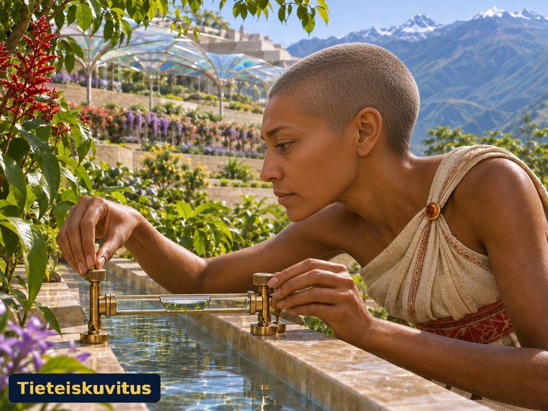
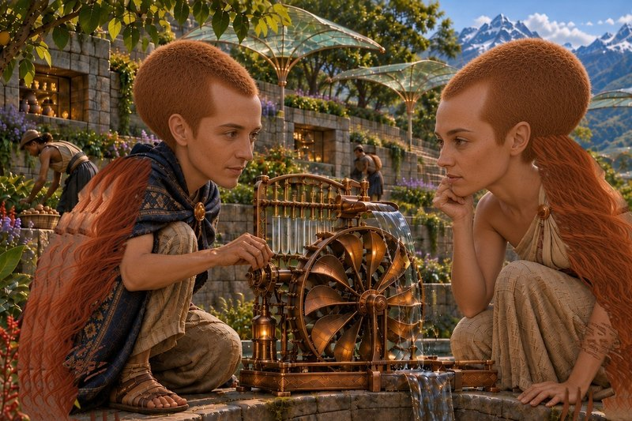

Les visages de la ville de pierre
Fiction. Illustrations IA d’une ville de pierre imaginaire. Chaque paire montre d’abord une photographie de Jani Korpi prise au Pérou, puis une illustration IA inspirée de sa forme. La ville de pierre et ses habitants sont inventés.
01 · L’opticien règle un prisme


La largeur du front et l’écart entre les orbites ont guidé la forme du haut du visage. Le menton et la bouche sont des choix de l’illustrateur.
Photo originale 01 et observations · Les paires 04 et 10 montrent peut-être le même objet que cette paire.
En savoir plus sur la page et afficher les 13 paires
La page repose sur l’idée de Jani d’une société imaginaire avancée, antérieure à l’humain. Les crânes des photos sources sont des restes humains. Dans le matériel de Paracas étudié, la tête allongée a été interprétée comme un modelage pratiqué dans l’enfance ; les données individuelles des crânes photographiés par Jani restent ouvertes. La ville de pierre et ses habitants sont inventés.
Chaque paire montre d’abord la photographie de Jani et, à côté ou en dessous, une illustration IA, c’est-à-dire une fiction réalisée à l’aide de l’IA à partir de la forme de la photo source. Le numéro relie la photo source et l’illustration. La mandibule manque souvent sur les photos sources ; le menton et la bouche sont donc des solutions de l’illustrateur. Les expressions, le teint, les cheveux et la vie quotidienne des personnages appartiennent à la ville de pierre. L’illustration ne permet de déduire ni les traits du visage, ni l’espèce, ni l’apparence du défunt.
Que nous disent les crânes ?Page factuelle : photos 01–11, textes d’exposition et recherche publiée.
02 · Un chargement de pierres passe dans la ruelle


Le front du personnage s’élève assez droit. Le modèle était le crâne clair de la rangée du haut du montage vidéo.
03 · La tailleuse de pierre vérifie un joint


Sur la vue de profil tournée vers la droite, la forme essentielle est la ligne qui va du front à l’arrière de la tête recourbé.
04 · Le jardinier examine une gousse


La forme ronde de la photo 01 se retrouve dans le haut du visage. Les mains aident à évaluer les proportions de la photo source.
Photo originale 04 et observations · Les paires 01 et 10 montrent peut-être le même objet que cette paire.
05 · La maîtresse des eaux met un canal à niveau



Le point de départ était le profil tourné vers la gauche du crâne au premier plan. La courbe de l’arrière de la tête se prolonge derrière l’oreille.
06 · Les tisserandes examinent une étoffe


La calotte du crâne de gauche s’incline vers l’arrière. Le contour de celui de droite s’élève plus droit.
07 · Rencontre au marché du maïs


Les trois angles ont inspiré trois contours de visage différents. Le personnage du milieu au marché est imaginé adulte.
08 · Une verrière part de la porte


La forme plus verticale du crâne de gauche et la ligne du front plus douce de celui de droite ressortent le mieux en comparant les profils.
09 · Le chant de la roue à eau



L’inclinaison différente des têtes de gauche et de droite donne leurs visages à deux habitants penchés vers la roue à eau.
10 · Le joueur de flûte dans la ruelle de pierre


La vue de profil montre la calotte ronde et le bord de l’orbite. La forme des lèvres et du menton du musicien est imaginée.
Photo originale 10 et observations · Les paires 01 et 04 montrent peut-être le même objet que cette paire.
11 · Échange de paniers dans la ville en terrasses


Les nombreux contours de la vitrine ont donné naissance à une vue de ville. Les habitants du premier plan ont été conçus pour cette scène.
Les visages de pierre du Caire et les crânes du Pérou
Les têtes d’Amarna sont des sculptures, et les musées décrivent la calotte allongée comme un trait stylistique de l’art amarnien (Global Egyptian Museum, JE 44869 · Musée égyptien de Berlin, ÄM 14145). Les crânes péruviens sont des restes humains ; dans le matériel de Paracas étudié, la tête allongée a été interprétée comme un modelage pratiqué dans l’enfance (contexte de recherche). Le lien entre eux n’est que visuel.
Les paires 12 et 13 mettent en regard les têtes de pierre filmées par Jani au Musée égyptien du Caire le 15 février 2024, les photos de crânes du Pérou et les personnages de la ville de pierre. Les images sources du Caire sont des recadrages d’images extraites de la vidéo de Jani (visite du musée à partir de 51:31). Les visages des visiteurs ont été floutés. Les photos du Caire et le contexte de recherche figurent aussi sur la page factuelle : Le Caire 2024.
Les numéros d’objet ne sont pas lisibles sur les images de Jani ; la fiche d’objet du musée est donc un point de comparaison et non une identification. La collection du Musée égyptien du Caire comprend la tête en quartzite JE 44869 trouvée à Tell el-Amarna, qui selon le Global Egyptian Museum est probablement Méritaton, fille aînée d’Akhenaton. La Deutsche Orient-Gesellschaft allemande l’a mise au jour en 1912 dans l’atelier du sculpteur Thoutmôsis (Global Egyptian Museum). Un visage de pierre de princesse amarnienne du même type se trouve aussi à New York (The Met, Head of a princess from a group statue). La fiche d’objet propre au musée du Caire : Head of Princess, daughter of Akhenaten.
12 · La tisserande répare une toile d’ombrage

Regardez la courbe de la calotte, la ligne du front et jusqu’où s’étend l’arrière de la tête. Des photos prises sous des angles différents ne permettent pas de comparer les proportions exactes. Ci-dessous, l’interprétation de l’illustrateur.

Ouvrir la photo originale du Pérou utilisée dans la comparaison
13 · La mesureuse du canal règle une vanne

Regardez la courbe de la calotte, la ligne du front et jusqu’où s’étend l’arrière de la tête. Des photos prises sous des angles différents ne permettent pas de comparer les proportions exactes. Ci-dessous, l’interprétation de l’illustrateur.

Ouvrir la photo originale du Pérou utilisée dans la comparaison
La même présentation dans la vidéo péruvienne

Ce point commun aide à identifier la présentation. Le lieu de découverte exact et l’identité des objets de la vitrine restent ouverts. Photo 09 sur la page factuelle.
Un autre exemple d’Amarna : le relief familial de Berlin

Le relief familial de Berlin montre comment les profils de la famille royale étaient aussi représentés gravés sur une surface de pierre plane. La calotte des filles s’allonge vers l’arrière. Selon le musée, ce trait est un pur procédé stylistique et non le signe d’une forme héréditaire ou provoquée volontairement (description du relief par le musée, en anglais).
Les expressions, le teint, les cheveux et la vie quotidienne des personnages appartiennent à la ville de pierre imaginaire. Certaines photos montrent le même objet sous différents angles.